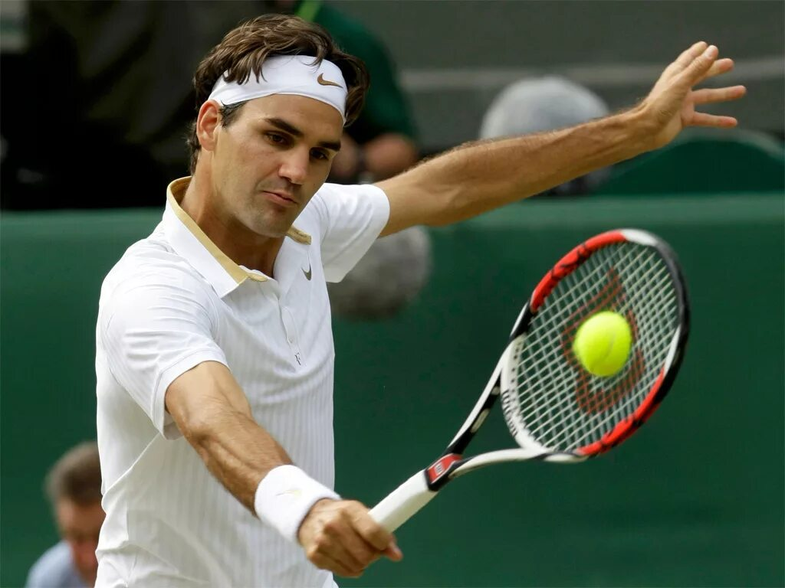
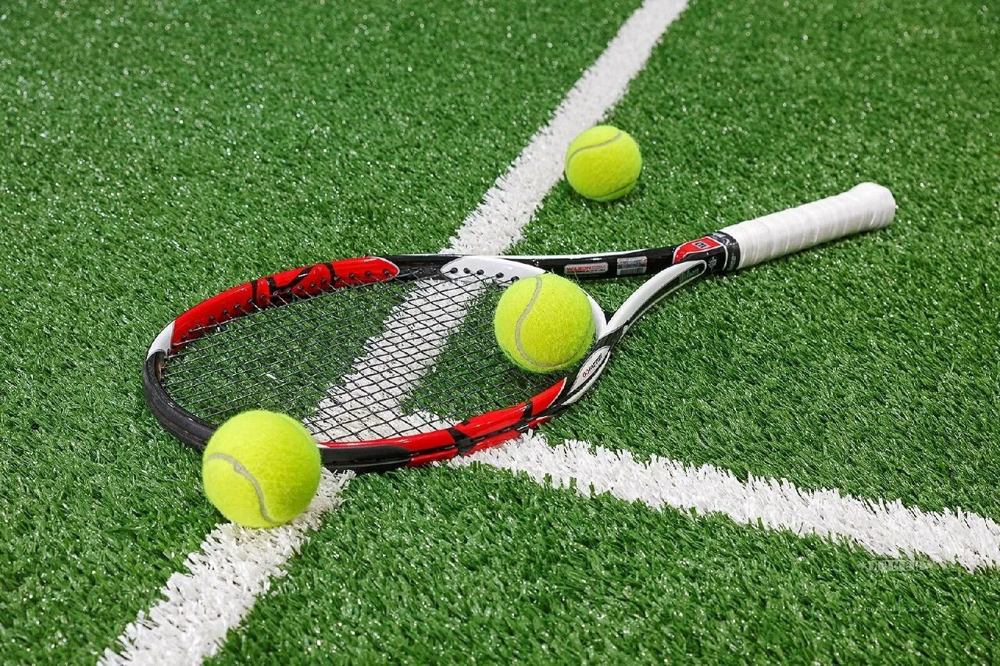
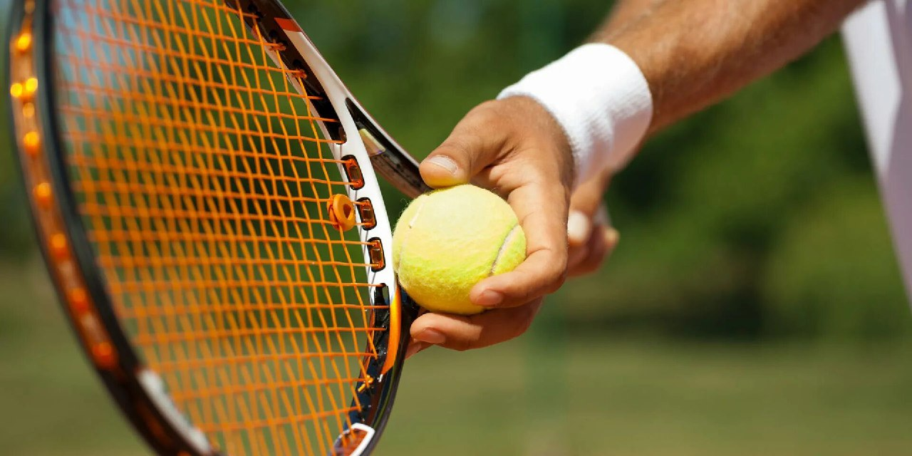

Теннис — это динамичный вид спорта, который играют на прямоугольной площадке с сеткой, разделяющей игровую зону.
Игроки используют ракетки, чтобы ударять мяч туда и обратно через сетку, стремясь набрать очки, затрудняя своему сопернику возврат мяча.
Известный своей быстрой динамикой и физическими требованиями, теннис требует ловкости, выносливости и психологической устойчивости.
